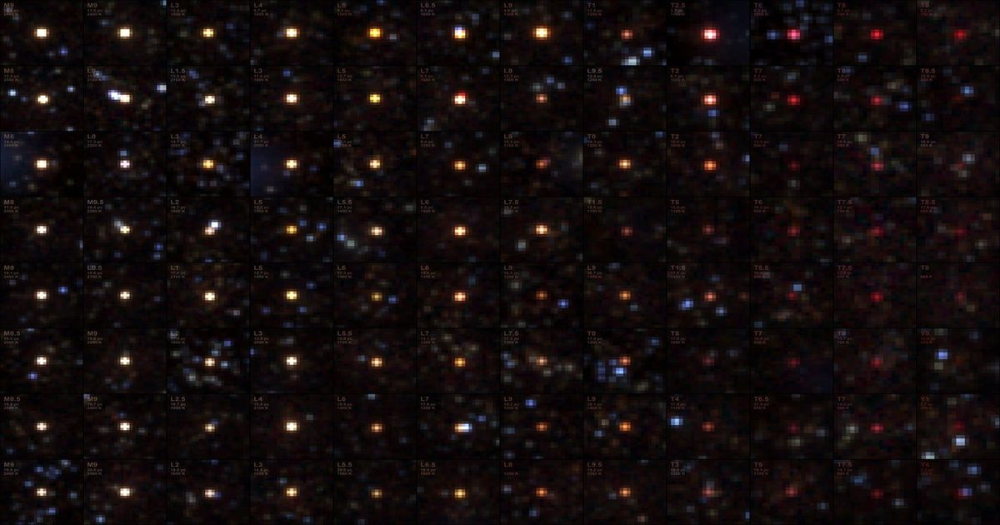

SPHEREx только что взял отпечатки пальцев неудавшихся звезд по всему нашему космическому району
Коричневые карлики - это черные (или коричневые?) овцы астрономии.
Они слишком велики, чтобы считаться традиционной газовой планетой, но они слишком малы, чтобы начать ядерный синтез и полностью перейти к звездному колпаку.
Они также резко меняются с течением времени, охлаждаются, сжимаются и вращаются быстрее по мере старения.
Или, по крайней мере, мы думаем, что они это делают - наши модели атмосфер этих небесных объектов не самые лучшие, согласно новой статье в Astr